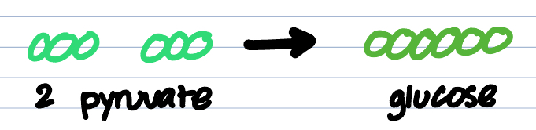
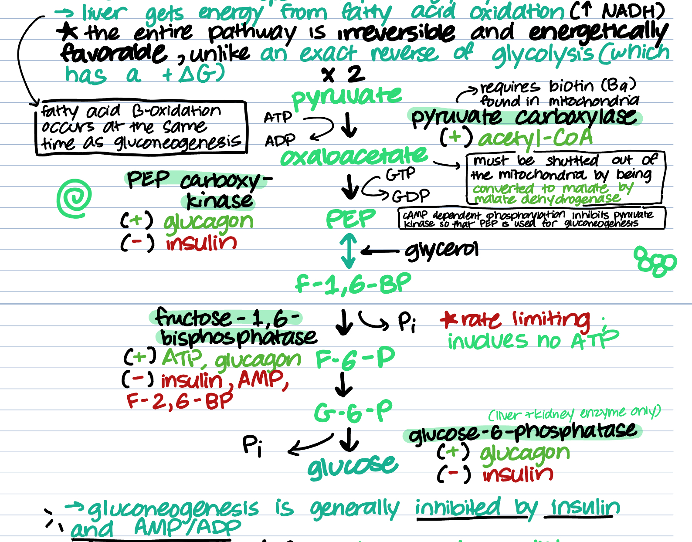

Welcome to the gluconeogenesis pathway! While glycolysis, PDH/TCA, and ETC were all catabolic pathways that create energy from glucose intake in the fed state, gluconeogenesis is an anabolic pathway that creates glucose from energy in the fasting state. This process mainly occurs in the liver and a little bit in the renal cortex of the kidney. Let's get into it and not waste any more time.
Let's take apart the word:
| Gluco (glucose/sugar) + neo (new) + genesis (creation) |
In this pathway, we're making new sugars from preexisting molecules in the body. Glycolysis makes pyruvate from glucose. This time, we're making glucose from pyruvate.

Yes, by definition, no, by thermodynamics. The exact reverse of glycolysis is NOT thermodynamically favorable, while gluconeogenesis is irreversible and thermodynamically favorable. However, the reversible steps of glycolysis, use the same enzymes in gluconeogenesis, and the two are reverse regulated, meaning that inhibitors of one process are activators of the other.
Gluconeogenesis is the main provider of glucose in the body during early fasting stages. It usually occurs during sleep, and the liver gets its materials to carry out the process from glycogen, alanine, or lactate. It plays a major role in preventing hypoglycemia (low blood sugar).
The gluconeogenic pathway can be broken down into three phases, bypass 1, conversion and bypass 2.
| Phase | Summary |
|---|---|
| 1st Bypass | ATP and GTP is invested to bypass the irreversible phases of glycolysis. This phase consists of the conversion of pyruvate to oxaloacetate through PEP carboxylase, and the conversion of oxaloacetate to PEP by PEP carboxykinase. |
| Conversion | The reversible reactions of glycolysis occur in the opposite direction. This is where glycolysis and gluconeogenesis "share" enzymes. It consists of all reactions containing reversible intermediates (ex: G3P → DHAP through triosephosphate isomerase). |
| 2nd Bypass | This contains the last two steps that bypass irreversible glycolysis phases. This phase consists of the conversion of fructose-1,6-BP to fructose-6-P by fructose-1,6-bisphosphatase, and the conversion of glucose-6-P to glucose via glucose-6-phosphatase. |
This process takes place in early starvationor during the fasting state. Thus the main activator of gluconeogenesis is glucagon and its main inhibitor is insulin. Below are some other activators and inhibitors specific to enzymes in the process.
| Enzyme | Reaction | Activator | Inhibitor |
|---|---|---|---|
| PEP carboxykinase | oxaloacetate → PEP | glucagon | insulin |
| Pyruvate carboxylase | Pyruvate → oxaloacetate | acetyl-CoA | -- |
| Fructose-1,6-bisphosphatase | Fructose-1,6-BP → fructose-6-phosphate | ATP, glucagon | insulin, AMP, fructose-2,6-BP |
| Glucose-6-phosphatase | Glucose-6-phosphate → glucose | glucagon | insulin |
Check out this diagram, outlining the full picture of the pathway.
